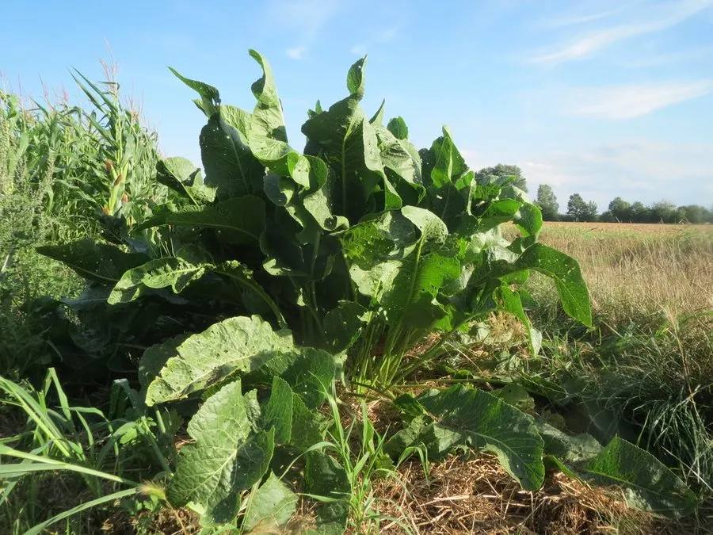

农作物与经济植物 · 植物界
辣根 Armoracia rusticana

十字花科多年生草本，主根粗壮、辛辣冲鼻，磨碎后是西式烤肉与海鲜的调味酱料，原产欧洲东南部。
- 分类
- 门被子植物门纲木兰纲目十字花目科十字花科属辣根属
- 栖息环境
- 冷凉地区的菜园、田边与荒地，喜疏松深厚土壤，耐寒
- 地理分布
- 原产欧洲东南部与西亚，欧美、日本广泛栽培，中国部分地区引种
- 保护级别
- 暂无评估；栽培作物，逸生种群常见
物种志
辣根为十字花科辣根属多年生草本，株高 0.6–1.2 米，具粗壮肉质主根，根皮黄白，断面白色。基生叶大型，长椭圆形，边缘有锯齿，叶柄长；茎生叶较小，披针形。总状花序顶生，花白色，四瓣，花期 5–6 月；短角果球形，种子不易成熟。
辣根原产欧洲东南部与西亚，古已有栽培，现欧美与日本广泛种植。其根部含黑芥子苷，磨碎后酶解释放异硫氰酸烯丙酯，产生强烈冲鼻辣味，是烤牛肉、熏鱼与海鲜的经典调料，市售“山葵酱”多以辣根加绿色素替代真正的山葵。栽培靠根段繁殖，喜冷凉、深厚疏松的土壤，忌连作；根可深达 1 米，需深翻土地。收后洗净磨碎应尽快食用或醋渍保存，久置辛辣味会减弱。
形态与习性
- 原产地欧洲东南部与西亚
- 株高0.6–1.2 米，主根可深达 1 米
- 辛辣成分黑芥子苷酶解产生异硫氰酸烯丙酯
- 用途烤牛肉、熏鱼、海鲜调料，制“山葵酱”
- 栽培根段繁殖，喜冷凉疏松土，忌连作
- 保存磨碎后尽快食用或醋渍，久置辣味减弱
趣味知识
- 辣根的“辣”是异硫氰酸酯的挥发刺激，磨碎后才产生，整根并不冲鼻。
- 市售廉价“绿芥末/山葵酱”大多用辣根加绿色素制成，而非真正的山葵。
- 它的根可深入土中一米，一旦种下很难彻底清除。
- 磨辣根时挥发的刺激物会熏眼呛鼻，最好在通风处或开盖操作，这正是它的“催泪”特性。